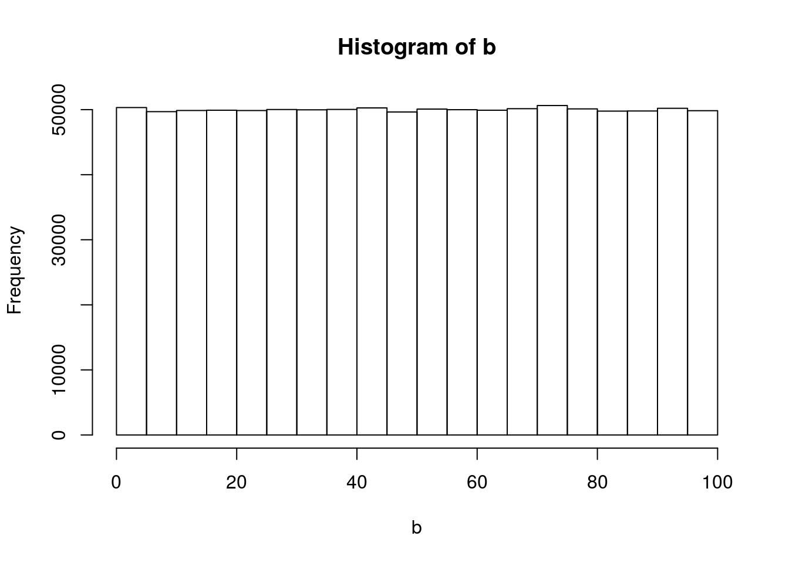

Do simple math with numbers, addition, subtraction, multiplication, division
1+1## [1] 23-2## [1] 14*6## [1] 245/7## [1] 0.7142857Put numbers into variables, do simple math on the variables
m <-1A). Write code that will place the numbers 1 to 100 separately into a variable using for loop.
a<-0
for(i in 1:100){
a<-a + print(i)
}## [1] 1
## [1] 2
## [1] 3
## [1] 4
## [1] 5
## [1] 6
## [1] 7
## [1] 8
## [1] 9
## [1] 10
## [1] 11
## [1] 12
## [1] 13
## [1] 14
## [1] 15
## [1] 16
## [1] 17
## [1] 18
## [1] 19
## [1] 20
## [1] 21
## [1] 22
## [1] 23
## [1] 24
## [1] 25
## [1] 26
## [1] 27
## [1] 28
## [1] 29
## [1] 30
## [1] 31
## [1] 32
## [1] 33
## [1] 34
## [1] 35
## [1] 36
## [1] 37
## [1] 38
## [1] 39
## [1] 40
## [1] 41
## [1] 42
## [1] 43
## [1] 44
## [1] 45
## [1] 46
## [1] 47
## [1] 48
## [1] 49
## [1] 50
## [1] 51
## [1] 52
## [1] 53
## [1] 54
## [1] 55
## [1] 56
## [1] 57
## [1] 58
## [1] 59
## [1] 60
## [1] 61
## [1] 62
## [1] 63
## [1] 64
## [1] 65
## [1] 66
## [1] 67
## [1] 68
## [1] 69
## [1] 70
## [1] 71
## [1] 72
## [1] 73
## [1] 74
## [1] 75
## [1] 76
## [1] 77
## [1] 78
## [1] 79
## [1] 80
## [1] 81
## [1] 82
## [1] 83
## [1] 84
## [1] 85
## [1] 86
## [1] 87
## [1] 88
## [1] 89
## [1] 90
## [1] 91
## [1] 92
## [1] 93
## [1] 94
## [1] 95
## [1] 96
## [1] 97
## [1] 98
## [1] 99
## [1] 100B). Then, again using the seq function.
seq(1,100)## [1] 1 2 3 4 5 6 7 8 9 10 11 12 13 14 15 16 17
## [18] 18 19 20 21 22 23 24 25 26 27 28 29 30 31 32 33 34
## [35] 35 36 37 38 39 40 41 42 43 44 45 46 47 48 49 50 51
## [52] 52 53 54 55 56 57 58 59 60 61 62 63 64 65 66 67 68
## [69] 69 70 71 72 73 74 75 76 77 78 79 80 81 82 83 84 85
## [86] 86 87 88 89 90 91 92 93 94 95 96 97 98 99 100Find the sum of all the integer numbers from 1 to 100:
A). Use the sum() function on a vector of numbers
b<-0
for(i in 1:100){
b<- b+sum(i)
}B). How would you do this without using the sum function? For example, how could you use a for loop to accomplish this task?
e<-0
for (i in 1:100){
e<-e + i
}Write a function to find the sum of all integers between any two values.
SumFunction <- function (x) {
f<-0
for (i in x){
f<-f+i
}
return(f)
}
x<-1:100
SumFunction(x)## [1] 5050List all of the odd numbers from 1 to 100: A). Use the seq() function
seq(1,100, by=2)## [1] 1 3 5 7 9 11 13 15 17 19 21 23 25 27 29 31 33 35 37 39 41 43 45
## [24] 47 49 51 53 55 57 59 61 63 65 67 69 71 73 75 77 79 81 83 85 87 89 91
## [47] 93 95 97 99B). How could you do this without using the seq() function? Consider using the mod function %%, which evaluates whether or not there is a remainder when dividing one number by another.
for(i in 1:100){
if (!i %%2)
next
print(i)
}## [1] 1
## [1] 3
## [1] 5
## [1] 7
## [1] 9
## [1] 11
## [1] 13
## [1] 15
## [1] 17
## [1] 19
## [1] 21
## [1] 23
## [1] 25
## [1] 27
## [1] 29
## [1] 31
## [1] 33
## [1] 35
## [1] 37
## [1] 39
## [1] 41
## [1] 43
## [1] 45
## [1] 47
## [1] 49
## [1] 51
## [1] 53
## [1] 55
## [1] 57
## [1] 59
## [1] 61
## [1] 63
## [1] 65
## [1] 67
## [1] 69
## [1] 71
## [1] 73
## [1] 75
## [1] 77
## [1] 79
## [1] 81
## [1] 83
## [1] 85
## [1] 87
## [1] 89
## [1] 91
## [1] 93
## [1] 95
## [1] 97
## [1] 99List all of the prime numbers from 1 to 1000.
PrimeFunction<-function (n){
for(i in 2:(n-1)) {
if ((n %% i) == 0) {
print('NOT Prime Number')
} else print('YES Prime Number')
return (n)
}
}Generate 100 random numbers.
h<-runif(100)
h## [1] 0.07978165 0.66804360 0.62561989 0.86594368 0.25632182 0.03495567
## [7] 0.88031913 0.99080676 0.71569858 0.19264414 0.22835132 0.97866406
## [13] 0.26049307 0.70333112 0.26888996 0.01397282 0.74582466 0.54012337
## [19] 0.02045906 0.63126320 0.14843992 0.84563706 0.78510718 0.97108695
## [25] 0.90422835 0.77190998 0.14861376 0.81200055 0.49458000 0.94235224
## [31] 0.08321835 0.30405809 0.10968223 0.88804771 0.72606832 0.15592822
## [37] 0.79568333 0.25793046 0.39585722 0.77957547 0.13855729 0.18589081
## [43] 0.37092541 0.22526416 0.34820949 0.41132856 0.44342523 0.93039147
## [49] 0.73576119 0.58425820 0.13661500 0.67034942 0.50861101 0.04028304
## [55] 0.20986239 0.51959737 0.47037092 0.44878161 0.80702831 0.48572043
## [61] 0.47570584 0.65398984 0.11659847 0.79470696 0.25496885 0.71667999
## [67] 0.01653045 0.86229651 0.66912877 0.15320867 0.99498501 0.72192140
## [73] 0.21596798 0.93751237 0.20895991 0.72663041 0.82069999 0.47296379
## [79] 0.48713512 0.18278622 0.86603194 0.08208753 0.43055203 0.86751287
## [85] 0.60712433 0.64613685 0.61172429 0.96720238 0.25544112 0.41292654
## [91] 0.47109753 0.36698035 0.59375996 0.92033694 0.06357342 0.03141976
## [97] 0.24058508 0.47761661 0.91349921 0.08903205Generate 100 random numbers within a specific range (runif can do this)
j<-runif(100,1,200)
j## [1] 46.094858 190.363015 143.591135 178.279508 56.661250 66.420416
## [7] 54.925730 4.706500 27.975167 50.382613 44.815400 83.724322
## [13] 48.653685 167.456631 186.728866 17.479222 145.640422 94.874613
## [19] 116.786069 86.155988 158.769593 17.115175 88.149227 138.594239
## [25] 17.876789 199.325364 83.684344 49.717705 10.391241 146.602719
## [31] 20.059311 48.643094 186.916672 46.725482 137.623431 172.987108
## [37] 59.343568 22.414928 89.754978 82.865510 50.812105 198.275648
## [43] 191.625485 154.884445 109.811100 105.790868 64.676480 14.432142
## [49] 191.953580 12.032309 12.252338 189.400571 169.336483 81.089346
## [55] 167.943317 103.108484 39.380646 51.801722 144.987718 169.584085
## [61] 103.268727 143.574934 130.582854 14.094275 177.740708 85.965074
## [67] 27.342503 136.508992 198.939268 42.666907 51.901519 188.635073
## [73] 62.348967 68.356607 64.539033 82.618547 46.474673 43.790860
## [79] 104.014021 66.145575 67.004873 45.850199 156.549647 161.680398
## [85] 34.173358 58.370646 158.254532 125.272935 151.923881 7.979196
## [91] 114.296400 64.935000 96.066214 103.120691 72.960049 119.627864
## [97] 189.574361 140.611704 18.494806 123.737243Write your own functions to give descriptive statistics for a vector variable storing multiple numbers. Write functions for the following without using R intrinsics: A). mean
MeanFunction <- function(x){
k<-0
l<- 0
for(i in x){
k <- k+sum(i)
l<-l+length(x)
}
return(k/l)
}
MeanFunction(x)## [1] 0.505B). mode
ModeFunction <- function(x){
m<-0
for(i in x){
m <- m+freq(x) }
return(m)
}
m## [1] 1C). median
MedianFunction <- function(x){
n<-0
p<-0
for(i in x){
n<-n+seq(i)
p<-p+((length(x)+1)/2)
}
return(p)
}D). range
RangeFunction <- function(x){
q<-0
r<-0
for(i in x){
q <-q+min(x)
r<-r+max(x)
}
return(r-q)
}
RangeFunction(x)## [1] 9900E). standard deviation
StanDevFunction <- function(x){
s<-0
for(i in x){
s <-s+sqrt(var(x))
}
return(s)
}
StanDevFunction(x)## [1] 2901.149Count the number of characters in a string variable (use strsplit() to split a character vector)
z <- "dskjfenlrhelenhtrileriwtnhreut"
t<- unlist(strsplit(z,split=""))
length(t)## [1] 30Count the number of words in a string variable (use strsplit)
y<-"Count the number of words in a string variable use strsplit"
u<- unlist(strsplit(y,split=" "))
length(u)## [1] 11Count the number of sentences in a string variable (consider splitting by the . character)
x<-"Count the number of sentences in a string variable. Consider splitting by the period character."
v<- unlist(strsplit(x,split=" "))
length(v)## [1] 1Count the number of times a specific character occurs in a string variable:
A). Table() function can help count individual occurences
w<-c(2,2,3,5,6,7,8,8,8,9,0,8,6,7,5,7,6,3,6,3,4)
ab<-table(w)
as.data.frame(ab)## w Freq
## 1 0 1
## 2 2 2
## 3 3 3
## 4 4 1
## 5 5 2
## 6 6 4
## 7 7 3
## 8 8 4
## 9 9 1B). How would you do this without the table function?
w<-c(2,2,3,5,6,7,8,8,8,9,0,8,6,7,5,7,6,3,6,3,4)
ab<-as.data.frame(w)
ab## w
## 1 2
## 2 2
## 3 3
## 4 5
## 5 6
## 6 7
## 7 8
## 8 8
## 9 8
## 10 9
## 11 0
## 12 8
## 13 6
## 14 7
## 15 5
## 16 7
## 17 6
## 18 3
## 19 6
## 20 3
## 21 4Do a logical test to see if one word is found within the text of another string variable.
bc<-"text"
cd<-"Do a logical test to see if one word is found within the text of another string variable"
bc%in%cd## [1] FALSEPut the current computer time in milliseconds into a variable
print(as.numeric(Sys.time())*1000, digits=15)## [1] 1549295477628.82Measure how long a piece of code takes to run by measuring the time before the code is run, and after the code is run, and taking the difference to find the total time
Before
Bb<-print(as.numeric(Sys.time())*1000, digits=15)## [1] 1549295477724.81After
Aa<-print(as.numeric(Sys.time())*1000, digits=15)## [1] 1549295477731.14Difference
AaBb<-Aa-Bb
AaBb## [1] 6.32959Read a .txt file or .csv file into a variable. Scan() is a general purpose text input function. read.csv() will read .csv files.
read.csv("RandomRead.csv",header = TRUE,sep = ",")## X x
## 1 1 2
## 2 2 8
## 3 3 6
## 4 4 4
## 5 5 0
## 6 6 1
## 7 7 4
## 8 8 7Output the contents of a variable to a .txt file
ds <- c(2,8,6,4,0,1,4,7)
hi<-write.csv(ds, file = "RandomRead.csv")
hi## NULLCreate a variable that stores a 20x20 matrix of random numbers
ef<-runif(400)
fg<-matrix(ef,nrow = 20,ncol = 20)
fg## [,1] [,2] [,3] [,4] [,5]
## [1,] 0.036365727 0.07195061 0.777830020 0.45066807 0.797698003
## [2,] 0.007686137 0.55117975 0.919552053 0.85771748 0.734828001
## [3,] 0.222652289 0.68094046 0.901197369 0.65114355 0.305242819
## [4,] 0.863077421 0.76369190 0.480874252 0.71003131 0.864144508
## [5,] 0.068253699 0.19285669 0.054615707 0.87902257 0.054117251
## [6,] 0.794217952 0.66342785 0.867345112 0.89483632 0.530908096
## [7,] 0.932294213 0.10516380 0.145291676 0.50188009 0.922839392
## [8,] 0.934900517 0.44963604 0.666386625 0.85677091 0.932730753
## [9,] 0.960159511 0.21382809 0.381025472 0.12935771 0.585644532
## [10,] 0.663604488 0.47205178 0.356960739 0.84075469 0.423143398
## [11,] 0.648190002 0.11544598 0.938598322 0.12552923 0.976707202
## [12,] 0.868452940 0.78395849 0.622359410 0.84939562 0.070595158
## [13,] 0.399708033 0.28950386 0.429591076 0.95143942 0.008108855
## [14,] 0.445538292 0.88038827 0.528800397 0.22296845 0.890203170
## [15,] 0.659845372 0.79668302 0.001051767 0.42558677 0.527458754
## [16,] 0.667740207 0.02365400 0.843827121 0.99836539 0.517015034
## [17,] 0.765260277 0.22574798 0.480484742 0.05064518 0.652560575
## [18,] 0.331464490 0.42877778 0.541565110 0.22635065 0.663840745
## [19,] 0.948876949 0.95786409 0.559910816 0.11042759 0.383169510
## [20,] 0.749921588 0.44442708 0.536582081 0.50395471 0.186350096
## [,6] [,7] [,8] [,9] [,10] [,11]
## [1,] 0.098284958 0.08830805 0.69098103 0.96951743 0.14838159 0.97405276
## [2,] 0.816514072 0.63580425 0.60974751 0.12536443 0.96974428 0.45501000
## [3,] 0.006219934 0.69286505 0.55799625 0.64461164 0.12058889 0.73745356
## [4,] 0.680222484 0.65804010 0.47951489 0.11704298 0.66423811 0.70975151
## [5,] 0.081390038 0.49117809 0.42953114 0.58828309 0.90206369 0.13086282
## [6,] 0.455809817 0.86950429 0.47047075 0.12883879 0.18677544 0.54185590
## [7,] 0.225509816 0.92526110 0.19977636 0.53881412 0.23800913 0.41829544
## [8,] 0.829590985 0.65681662 0.95386768 0.71984219 0.04691259 0.64324691
## [9,] 0.960692724 0.83479973 0.43747463 0.21847241 0.92999903 0.15124764
## [10,] 0.299865008 0.57614978 0.39023577 0.11452820 0.77408759 0.00337400
## [11,] 0.519367984 0.29648449 0.97700904 0.03347481 0.24243008 0.74582610
## [12,] 0.499009542 0.53891048 0.80908198 0.26552043 0.09467743 0.42554897
## [13,] 0.997153080 0.37063230 0.03198983 0.23744428 0.92114981 0.38842834
## [14,] 0.267294517 0.11917686 0.68460709 0.27804782 0.52834003 0.35574826
## [15,] 0.971571875 0.96013027 0.40606512 0.49689036 0.41992714 0.01750971
## [16,] 0.346880992 0.34568505 0.68829092 0.99748257 0.78081775 0.81440921
## [17,] 0.440763840 0.84566505 0.10468868 0.98377242 0.28172003 0.57508393
## [18,] 0.094161837 0.06324883 0.94641953 0.40202075 0.44717246 0.57769288
## [19,] 0.756076800 0.64658757 0.21386235 0.50643507 0.99283769 0.39257319
## [20,] 0.117917079 0.17938762 0.11405427 0.10402639 0.83780817 0.90068471
## [,12] [,13] [,14] [,15] [,16] [,17]
## [1,] 0.24258204 0.62649170 0.28270760 0.99494288 0.75706139 0.04726882
## [2,] 0.91590437 0.26307019 0.20274990 0.19700409 0.30378832 0.70805048
## [3,] 0.27113869 0.63459997 0.38658199 0.76536861 0.20630113 0.79691964
## [4,] 0.20622930 0.61970897 0.69765138 0.76844788 0.15236713 0.81863690
## [5,] 0.78510874 0.66076250 0.66962222 0.56242758 0.12733540 0.97873312
## [6,] 0.09584636 0.73015766 0.84891961 0.80773469 0.22599678 0.61551341
## [7,] 0.51055738 0.63228741 0.28167611 0.32863566 0.70549833 0.32111938
## [8,] 0.22197955 0.87074273 0.36004852 0.24992680 0.48757915 0.80503534
## [9,] 0.49428315 0.12086242 0.33379640 0.70997741 0.59576269 0.96376498
## [10,] 0.45164605 0.79901114 0.70271849 0.81551425 0.39389082 0.27365542
## [11,] 0.85119953 0.02023518 0.53437728 0.66291997 0.70440607 0.70042646
## [12,] 0.81660771 0.81367713 0.68679304 0.20657546 0.98149927 0.86943865
## [13,] 0.87211580 0.57980904 0.79121926 0.05802339 0.30263743 0.87783631
## [14,] 0.50966974 0.30732012 0.61854380 0.44513279 0.79688846 0.66336836
## [15,] 0.18683571 0.06539145 0.46133417 0.83284540 0.54100872 0.52418197
## [16,] 0.21105988 0.86080206 0.14969096 0.13563478 0.99494887 0.81999133
## [17,] 0.22297901 0.11787191 0.09671243 0.91458810 0.48522871 0.82264874
## [18,] 0.79699041 0.85450640 0.16370041 0.14038163 0.05354448 0.89799001
## [19,] 0.92707565 0.04963639 0.25488432 0.10839022 0.16998245 0.60350957
## [20,] 0.06164760 0.19854058 0.76305994 0.57565520 0.62890557 0.59206627
## [,18] [,19] [,20]
## [1,] 0.19167183 0.43661054 0.404442271
## [2,] 0.51710244 0.09615859 0.076398887
## [3,] 0.72317050 0.19531874 0.156647980
## [4,] 0.55861950 0.24246534 0.777440555
## [5,] 0.26967948 0.25998325 0.801080845
## [6,] 0.77465455 0.73002681 0.145053139
## [7,] 0.70796749 0.83121495 0.284746965
## [8,] 0.68634243 0.13790141 0.616371874
## [9,] 0.29045787 0.15563434 0.409376382
## [10,] 0.62835585 0.40559249 0.009038248
## [11,] 0.44551885 0.48380749 0.596658535
## [12,] 0.38763891 0.01872340 0.884193736
## [13,] 0.65907789 0.11947995 0.440657350
## [14,] 0.22186475 0.78865294 0.392314105
## [15,] 0.21350765 0.62731892 0.161153539
## [16,] 0.26867201 0.49351956 0.481174196
## [17,] 0.88125319 0.87116029 0.345881140
## [18,] 0.03886659 0.06895285 0.990770915
## [19,] 0.13001484 0.82863110 0.665595489
## [20,] 0.75183328 0.85312373 0.625246725Output any matrix to a txt file using commas or tabs to separate column values, and new lines to separate row values
ij<-write.csv(ef,file = "RandomRead.csv", sep="\t", row.names = TRUE, col.names = NA)
ijThe FizzBuzz Problem List the numbers from 1 to 100 with the following constraints. If the number can be divided by three evenly, then print Fizz instead of the number. If the number can be divided by five evenly, then print Buzz instead of the number. Finally, if the number can be divided by three and five evenly, then print FizzBuzz instead of the number.
a<-c(1:100)
z<-seq(3,100, by=3)
a[z]<-'FIZZ'
y<-seq(5,100, by=5)
a[y]<-'BUZZ'
x<-seq(15,100, by=15)
a[x]<-'FIZZBUZZ'
a## [1] "1" "2" "FIZZ" "4" "BUZZ" "FIZZ"
## [7] "7" "8" "FIZZ" "BUZZ" "11" "FIZZ"
## [13] "13" "14" "FIZZBUZZ" "16" "17" "FIZZ"
## [19] "19" "BUZZ" "FIZZ" "22" "23" "FIZZ"
## [25] "BUZZ" "26" "FIZZ" "28" "29" "FIZZBUZZ"
## [31] "31" "32" "FIZZ" "34" "BUZZ" "FIZZ"
## [37] "37" "38" "FIZZ" "BUZZ" "41" "FIZZ"
## [43] "43" "44" "FIZZBUZZ" "46" "47" "FIZZ"
## [49] "49" "BUZZ" "FIZZ" "52" "53" "FIZZ"
## [55] "BUZZ" "56" "FIZZ" "58" "59" "FIZZBUZZ"
## [61] "61" "62" "FIZZ" "64" "BUZZ" "FIZZ"
## [67] "67" "68" "FIZZ" "BUZZ" "71" "FIZZ"
## [73] "73" "74" "FIZZBUZZ" "76" "77" "FIZZ"
## [79] "79" "BUZZ" "FIZZ" "82" "83" "FIZZ"
## [85] "BUZZ" "86" "FIZZ" "88" "89" "FIZZBUZZ"
## [91] "91" "92" "FIZZ" "94" "BUZZ" "FIZZ"
## [97] "97" "98" "FIZZ" "BUZZ"A). Frequency Counts Take text as input, and be able to produce a table that shows the counts for each character in the text. This problem is related to the earlier easy problem asking you to count the number of times that a single letter appears in a text. The slightly harder problem is the more general version: count the frequencies of all unique characters in a text.
y<-"Frequency Counts"
table(unlist(strsplit(y,split="")))##
## c C e F n o q r s t u y
## 1 1 1 2 1 2 1 1 1 1 1 2 1B).Can you do this without using table? Attempt this problem using data.frame
y<-c('F','r','e','q','u','e','n','c','y','C','o','u','n','t','s')
x<-c(1:15)
FCD<-data.frame(x,y)
FCD## x y
## 1 1 F
## 2 2 r
## 3 3 e
## 4 4 q
## 5 5 u
## 6 6 e
## 7 7 n
## 8 8 c
## 9 9 y
## 10 10 C
## 11 11 o
## 12 12 u
## 13 13 n
## 14 14 t
## 15 15 sTest the Random Number Generator Test the random number generator for a flat distribution. Generate a few million random numbers between 0 and 100. Count the number of 0s, 1s, 2s, 3s, etc. all the way up to 100. Look at the counts for each of the numbers and determine if they are relatively equal. For example, you could plot the counts in Excel to make a histogram. If all of the bars are close to being flat, then each number had an equal chance of being selected, and the random number generator is working without bias.
b<-runif(1000000,min=0, max=100)
hist(b) # Problem 4 Create a Multiplication Table Generate a matrix for a multiplication table. For example, the labels for the columns could be the numbers 1 to 10, and the labels for the rows could be the numbers 1 to 10. The contents of each of the cells in the matrix should be correct answer for multiplying the column value by the row value.
for(i in 1:10){
for(t in 1:10){
w<-print(i*t)
}
}## [1] 1
## [1] 2
## [1] 3
## [1] 4
## [1] 5
## [1] 6
## [1] 7
## [1] 8
## [1] 9
## [1] 10
## [1] 2
## [1] 4
## [1] 6
## [1] 8
## [1] 10
## [1] 12
## [1] 14
## [1] 16
## [1] 18
## [1] 20
## [1] 3
## [1] 6
## [1] 9
## [1] 12
## [1] 15
## [1] 18
## [1] 21
## [1] 24
## [1] 27
## [1] 30
## [1] 4
## [1] 8
## [1] 12
## [1] 16
## [1] 20
## [1] 24
## [1] 28
## [1] 32
## [1] 36
## [1] 40
## [1] 5
## [1] 10
## [1] 15
## [1] 20
## [1] 25
## [1] 30
## [1] 35
## [1] 40
## [1] 45
## [1] 50
## [1] 6
## [1] 12
## [1] 18
## [1] 24
## [1] 30
## [1] 36
## [1] 42
## [1] 48
## [1] 54
## [1] 60
## [1] 7
## [1] 14
## [1] 21
## [1] 28
## [1] 35
## [1] 42
## [1] 49
## [1] 56
## [1] 63
## [1] 70
## [1] 8
## [1] 16
## [1] 24
## [1] 32
## [1] 40
## [1] 48
## [1] 56
## [1] 64
## [1] 72
## [1] 80
## [1] 9
## [1] 18
## [1] 27
## [1] 36
## [1] 45
## [1] 54
## [1] 63
## [1] 72
## [1] 81
## [1] 90
## [1] 10
## [1] 20
## [1] 30
## [1] 40
## [1] 50
## [1] 60
## [1] 70
## [1] 80
## [1] 90
## [1] 100matrix(w,nrow = 10,ncol = 10)## [,1] [,2] [,3] [,4] [,5] [,6] [,7] [,8] [,9] [,10]
## [1,] 100 100 100 100 100 100 100 100 100 100
## [2,] 100 100 100 100 100 100 100 100 100 100
## [3,] 100 100 100 100 100 100 100 100 100 100
## [4,] 100 100 100 100 100 100 100 100 100 100
## [5,] 100 100 100 100 100 100 100 100 100 100
## [6,] 100 100 100 100 100 100 100 100 100 100
## [7,] 100 100 100 100 100 100 100 100 100 100
## [8,] 100 100 100 100 100 100 100 100 100 100
## [9,] 100 100 100 100 100 100 100 100 100 100
## [10,] 100 100 100 100 100 100 100 100 100 100Encrypt and Decrypt the Alphabet Turn any normal english text into an encrypted version of the text, and be able to turn any decrypted text back into normal english text. A simple encryption would be to scramble the alphabet such that each letter corresponds to a new randomly chosen (but unique) letter.
b<- c('E','n','c','r','y','p','t', 'D','e','c','r','y','p','t','A','l','p','h','a','b','e','t')
b <- as.factor(b)
levels(b)## [1] "a" "A" "b" "c" "D" "e" "E" "h" "l" "n" "p" "r" "t" "y"k<-b
levels(k)## [1] "a" "A" "b" "c" "D" "e" "E" "h" "l" "n" "p" "r" "t" "y"k## [1] E n c r y p t D e c r y p t A l p h a b e t
## Levels: a A b c D e E h l n p r t ySnakes and Ladders A). Your task here is to write an algorithm that can simulate playing the above depicted Snakes and Ladders board. You should assume that each roll of the dice produces a random number between 1 and 6. After you are able to simulate one played game, you will then write a loop to simulate 1000 games, and estimate the average number of dice rolls needed to successfully complete the game.
### Simulation of one played game
m<-0
n<-0
while(m<25){
n<-n+1
m<-m+sample(c(1:6),1)
}
n## [1] 7# A loop simulation of 1000 games and estimation of average number of dice rolls needed to successfully complete game
m<-0
n<-0
z<-0
for(i in 1:1000)
while(m<25){
n<-n+1
m<-m+sample(c(1:6),1)
}
z[i]<-n
mean(n)## [1] 8Dice-rolling simulations. Assume that a pair of dice are rolled. Using monte carlo-simulation, compute the probabilities of rolling a 2, 3, 4, 5, 6, 7, 8, 9, 10, 11, and 12, respectively.
r<-0
q<-0
s<-0
for(i in 1:1000)
while(r<25){
q<-q+1
r<-r+sample(c(2:12),1)
s[i]<-q
}
q## [1] 5Monte Hall problem. The monte-hall problem is as follows. A contestant in a game show is presented with three closed doors. They are told that a prize is behind one door, and two goats are behind the other two doors. They are asked to choose which door contains the prize. After making their choice the game show host opens one of the remaining two doors (not chosen by the contestant), and reveals a goat. There are now two door remaining. The contestant is asked if they would like to switch their choice to the other door, or keep their initial choice. The correct answer is that the participant should switch their initial choice, and choose the other door. This will increase their odds of winning. Demonstrate by monte-carlo simulation that the odds of winning is higher if the participant switches than if the participants keeps their original choice.
h<-0
g<-0
y<-0
for(i in 1:1000)
while(h<25){
g<-g+1
h<-h+sample(c(1:10),1)
y[i]<-g
}
g## [1] 4100 doors problem. Problem: You have 100 doors in a row that are all initially closed. You make 100 passes by the doors. The first time through, you visit every door and toggle the door (if the door is closed, you open it; if it is open, you close it). The second time you only visit every 2nd door (door 2, 4, 6, etc.). The third time, every 3rd door (door 3, 6, 9, etc.), etc, until you only visit the 100th door.
z<-0
p<-0
d<-0
for(i in 1:100)
while(z<100){
p<-p+1
z<-z+sample(c(1:100),1)
d[i]<-p
}
p## [1] 299 Bottles of Beer Problem In this puzzle, write code to print out the entire “99 bottles of beer on the wall”" song. For those who do not know the song, the lyrics follow this form: X bottles of beer on the wall X bottles of beer Take one down, pass it around X-1 bottles of beer on the wall
Where X and X-1 are replaced by numbers of course, from 99 all the way down to 0.
v<-0
x<-0
s<-0
for(i in 0:99)
while(v<100){
x<-x+1
v<-v+x-1
s<-print(x+v)
}## [1] 1
## [1] 3
## [1] 6
## [1] 10
## [1] 15
## [1] 21
## [1] 28
## [1] 36
## [1] 45
## [1] 55
## [1] 66
## [1] 78
## [1] 91
## [1] 105
## [1] 120s## [1] 120Random Tic-Tac-Toe Imagine that two players make completely random choices when playing tic-tac-toe. Each game will either end in a draw or one of the two players will win. Create a monte-carlo simulation of this “random” version of tic-tac-toe. Out 10,000 simulations, what proportion of the time is the game won versus drawn?
uk<-0
ty<-0
k<-0
for(i in 1:10000)
while(uk<25){
ty<-ty+1
uk<-uk+sample(c(1:10000),1)
k[i]<-ty
}
ty## [1] 1